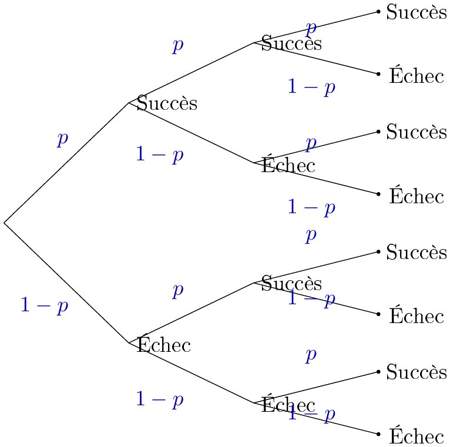
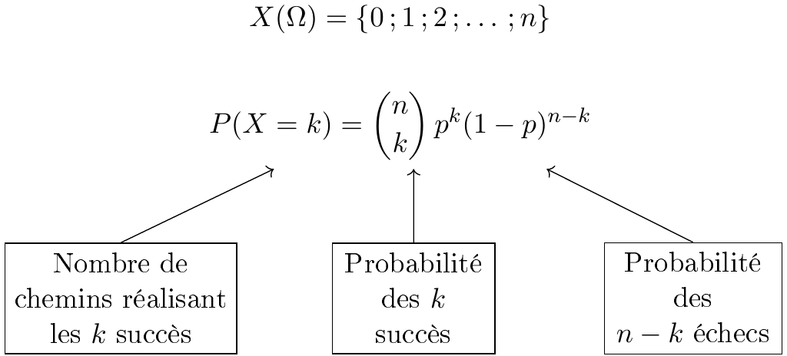

Chapitre 4 : Probabilités conditionnelles et loi binomiale
Terminale spécialité · Chapitre 4 — Probabilités conditionnelles et loi binomiale · cours de Frederik de Peyrelongue
I. Probabilité conditionnelle
Soit $A$ et $B$ deux événements avec $\prob(A)\neq 0$.
On appelle probabilité conditionnelle de $B$ sachant $A$, la probabilité que l'événement $B$ se réalise sachant que l'événement $A$ est réalisé. Elle est notée $\prob_{A}(B)$ et est définie par
Un sac contient $50$ boules, dont $20$ boules rouges et $30$ boules noires, où il est marqué soit « Gagné », soit « Perdu ».
- Sur $15$ boules rouges, il est marqué Gagné.
- Sur $9$ boules noires, il est marqué Gagné.
On tire au hasard une boule dans le sac. Soit $R$ l'événement « On tire une boule rouge » et $G$ l'événement « On tire une boule marquée Gagné ».
Donc $R\cap G$ est l'événement « On tire une boule rouge marquée Gagné ».
Alors
Donc la probabilité qu'on tire une boule marquée Gagné sachant qu'elle est rouge est
Remarque. La probabilité conditionnelle suit les règles et lois de probabilités vues pour les probabilités simples. On a en particulier :
- $0\leqslant\prob_{A}(B)\leqslant 1$ ;
- $\prob_{A}\bigl(\overline{B}\bigr)=1-\prob_{A}(B)$ ;
- $\prob(A\cap B)=\prob(A)\times\prob_{A}(B)$.
II. Probabilité et indépendance
On dit que deux événements $A$ et $B$ de probabilité non nulle sont indépendants lorsque
Les événements $A$ et $B$ de probabilité non nulle sont indépendants si et seulement si
Dans une population, un individu est atteint par la maladie $a$ avec une probabilité égale à $0{,}005$ et par la maladie $b$ avec une probabilité égale à $0{,}01$.
On choisit au hasard un individu de cette population. Soit $A$ l'événement « L'individu a la maladie $a$ » et $B$ l'événement « L'individu a la maladie $b$ ». On suppose que les événements $A$ et $B$ sont indépendants.
- Calculer la probabilité qu'un individu soit atteint par les deux maladies.
- Calculer $\prob(A\cup B)$. Interpréter le résultat.
Correction.
1) La probabilité qu'un individu soit atteint par les deux maladies est $\prob(A\cap B)$.
Or, d'après la formule de probabilité conditionnelle, $\prob_{B}(A)=\dfrac{\prob(A\cap B)}{\prob(B)}$, soit
La probabilité qu'un individu soit atteint par les deux maladies est égale à $0{,}00005$.
2) On a
La probabilité qu'un individu choisi au hasard ait au moins une des deux maladies est égale à $0{,}01495$.

III. Variable aléatoire et loi de probabilité
III.1 Variable aléatoire
Une variable aléatoire $X$ est une fonction définie sur un univers $\Omega$ et à valeurs dans $\R$.
Si $x_{1},x_{2},\dots,x_{r}$ désignent les valeurs prises par $X$, on note « $X=x_{i}$ » l'événement « $X$ prend la valeur $x_{i}$ ».
On considère le jeu suivant : on lance un dé à six faces.
- Si le résultat est pair, on gagne $2$ euros.
- Si le résultat est $1$, on gagne $3$ euros.
- Si le résultat est $3$ ou $5$, on perd $4$ euros.
On a défini une variable aléatoire $X$ sur $\Omega=\{1\,;2\,;3\,;4\,;5\,;6\}$ qui peut prendre les valeurs $2$, $3$ ou $-4$.
On a donc :
3.2 Loi de probabilité
Soit une variable aléatoire $X$ définie sur un univers $\Omega$ et prenant les valeurs $x_{1},x_{2},\dots,x_{r}$.
La loi de probabilité de $X$ associe à toute valeur $x_{i}$ la probabilité $\prob(X=x_{i})$.
On considère la variable aléatoire $X$ définie dans l'exemple précédent.
Chaque issue du lancer de dé est équiprobable et égale à $\dfrac{1}{6}$.
La probabilité que la variable aléatoire prenne la valeur $2$ est égale à $\dfrac{1}{6}+\dfrac{1}{6}+\dfrac{1}{6}=\dfrac{1}{2}$.
On note : $\prob(X=2)=\dfrac{1}{2}$. De même : $\prob(X=3)=\dfrac{1}{6}$ et $\prob(X=-4)=\dfrac{1}{6}+\dfrac{1}{6}=\dfrac{1}{3}$.
On peut résumer les résultats dans un tableau :
| $x_{i}$ | $-4$ | $2$ | $3$ |
| $\prob(X=x_{i})$ | $\dfrac{1}{3}$ | $\dfrac{1}{2}$ | $\dfrac{1}{6}$ |
Ce tableau résume la loi de probabilité de la variable aléatoire $X$.
Remarque. $\prob(X=x_{i})$ peut se noter $p_{i}$.
La somme de toutes les probabilités $\prob(X=x_{i})$ doit toujours être égale à $1$.
III.3 Espérance d'une variable aléatoire réelle
L'espérance de $X$ est le nombre réel, noté $E(X)$, défini par
C'est une moyenne pondérée par la loi de probabilité. $E(X)$ peut s'interpréter comme la valeur moyenne des valeurs prises par $X$ lorsque l'expérience aléatoire est répétée un très grand nombre de fois.
La loi de probabilité d'une variable aléatoire $X$ est donnée ci-dessous :
| $x_{i}$ | $-2$ | $1$ | $4$ |
| $\prob(X=x_{i})$ | $\dfrac{1}{6}$ | $\dfrac{1}{2}$ | $\dfrac{1}{3}$ |
On a alors
Soit $X$ une variable aléatoire et soient $a$ et $b$ des réels. Alors
Rappel. On a utilisé la propriété $p_{1}+p_{2}+\dots+p_{r}=1$.
Soit $X$ une variable aléatoire dont on donne la loi de probabilité dans le tableau suivant. Calculer et interpréter $E(X)$.
| $x_{i}$ | $-2$ | $1$ | $4$ |
| $\prob(X=x_{i})$ | $0{,}2$ | $0{,}5$ | $0{,}3$ |
Sur un très grand nombre de répétitions de cette expérience aléatoire, la valeur moyenne de $X$ est $1{,}3$.
3.4 Variance et écart-type
Soit une variable aléatoire $X$ de loi de probabilité $(x_{i}\,;p_{i})$, $i$ allant de $1$ à $n$.
La variance de la loi de probabilité de $X$ est
L'écart-type de la loi de probabilité de $X$ est
Soit une variable aléatoire $X$ définie sur un univers $\Omega$, et $a$, $b$ deux nombres réels. Alors
L'écart-type est la racine carrée de la variance :
IV. Loi uniforme et loi de Bernoulli
IV.1 Loi uniforme discrète sur $\{1\,;2\,;\dots\,;n\}$
$X$ est une variable aléatoire qui prend ses valeurs dans l'ensemble $\{1\,;2\,;\dots\,;n\}$ avec $n\in\N^{*}$.
Dire que la loi de probabilité de $X$ suit la loi uniforme sur $\{1\,;2\,;\dots\,;n\}$ signifie que toutes les valeurs prises par $X$ sont équiprobables. Ainsi, pour tout entier naturel $k$ de l'ensemble $\{1\,;2\,;\dots\,;n\}$,
Soit $X$ une variable aléatoire qui suit la loi uniforme sur $\{1\,;2\,;\dots\,;n\}$. Alors l'espérance de $X$ vaut
Soit un dé équilibré et $X$ la variable aléatoire qui indique le numéro de la face. $X$ prend les valeurs $\{1\,;2\,;\dots\,;6\}$ et suit une loi uniforme, donc
4.2 Épreuve et loi de Bernoulli
Une épreuve de Bernoulli est une expérience aléatoire à deux issues. L'une est souvent appelée succès et notée $S$, l'autre est souvent appelée échec et notée $\overline{S}$.
L'épreuve consiste à observer la parité d'un lancer de dé. Il y a deux issues : pair ou impair.
On considère une épreuve de Bernoulli où la probabilité de succès est $p$. $X$ est la variable aléatoire qui prend la valeur $1$ en cas de succès et $0$ en cas d'échec.
La loi de probabilité de $X$ est appelée loi de Bernoulli de paramètre $p$ :
| $x_{i}$ | $0$ | $1$ |
| $\prob(X=x_{i})$ | $1-p$ | $p$ |
$X$ est une variable aléatoire qui suit la loi de Bernoulli de paramètre $p$.
V. Schéma de Bernoulli et loi binomiale
V.1 Schéma de Bernoulli
On considère une expérience aléatoire qui consiste à répéter $n$ fois une même épreuve de Bernoulli (épreuve à deux issues : $S$ succès et $\overline{S}$ échec). On note $p=\prob(S)$ et $\prob(\overline{S})$.
Lorsque cette épreuve est répétée de manière identique et indépendante, on obtient un schéma de Bernoulli de paramètre $n$ et $p$.
À ce schéma de Bernoulli, on associe une variable aléatoire $X$ qui compte les succès.

Formule de calcul de $\prob(X=k)$.
La probabilité sur une branche avec uniquement $k$ succès est $p^{k}(1-p)^{n-k}$. Il faut ensuite dénombrer (compter) les branches avec uniquement $k$ succès.
Avec $k$ succès parmi $n$ tirages, on a aussi $(n-k)$ échecs : il y a plusieurs chemins réalisant cet événement. Chaque chemin est déterminé par la donnée de ses $k$ succès ; le nombre de chemins menant à $k$ succès est égal au nombre de combinaisons de $k$ parmi $n$ : $\dbinom{n}{k}$.

V.2 Coefficients binomiaux
On représente à l'aide d'un arbre de probabilité un schéma de Bernoulli constitué de $n$ épreuves. Pour tout entier $k$ avec $0\leqslant k\leqslant n$, le nombre de chemins réalisant $k$ succès est noté $\dbinom{n}{k}$.
La notation $\dbinom{n}{k}$ se lit « $k$ parmi $n$ ». Ces nombres sont appelés coefficients binomiaux.
Pour tout entier $n\geqslant 1$ :
- $\dbinom{n}{k}=\dfrac{n!}{(n-k)!\,k!}$ ;
- $\dbinom{n}{0}=\dbinom{n}{n}=1$ ;
- pour tout entier $k$ avec $0\leqslant k\leqslant n$, $\dbinom{n}{k}=\dbinom{n}{n-k}$ (par symétrie).
succès et un seul chemin qui réalise $n$ succès.
Il y a autant de chemins sur l'arbre qui réalisent $k$ succès que de chemins qui réalisent $k$ échecs, c'est-à-dire $n-k$ succès.
Pour tous entiers naturels $n$ et $k$ tels que $n\geqslant 1$ et $0\leqslant k\leqslant n-1$,
Application : le triangle de Pascal.
$\dbinom{n}{k}$ est le coefficient binomial qui compte le nombre de chemins pour avoir $k$ succès. Le triangle de Pascal permet de calculer les coefficients binomiaux.
| $n$ | Triangle | $\binom{n}{0}$ | $\binom{n}{1}$ | $\binom{n}{2}$ | $\binom{n}{3}$ | $\binom{n}{4}$ | $\binom{n}{5}$ |
| $1$ | $1\quad 1$ | $1$ | $1$ | ||||
| $2$ | $1\quad 2\quad 1$ | $1$ | $2$ | $1$ | |||
| $3$ | $1\quad 3\quad 3\quad 1$ | $1$ | $3$ | $3$ | $1$ | ||
| $4$ | $1\quad 4\quad 6\quad 4\quad 1$ | $1$ | $4$ | $6$ | $4$ | $1$ | |
| $5$ | $1\quad 5\quad 10\quad 10\quad 5\quad 1$ | $1$ | $5$ | $10$ | $10$ | $5$ | $1$ |
5.3 La loi binomiale
La variable aléatoire $X$ qui compte les succès dans un schéma de Bernoulli de paramètres $n$ et $p$ suit la loi binomiale de paramètres $n$ et $p$, notée $\mathcal{B}(n\,;p)$.
La variable aléatoire $X$ prend des valeurs entières entre $0$ et $n$, et
$n=5$, $k=3$ et $p=0{,}1$ :
On considère une urne opaque dans laquelle ont été placées une boule verte et deux boules bleues, toutes indiscernables au toucher. On prélève une boule dans cette urne, on note sa couleur puis on remet la boule dans l'urne. On répète dix fois l'expérience et on note $X$ la variable aléatoire qui compte le nombre de boules bleues obtenu à la fin des dix tirages.
Le tirage de chaque boule est une épreuve de Bernoulli (succès : « Boule est bleue »). Comme les dix tirages sont avec remise, les tirages sont identiques et indépendants.
Ce tirage est donc un schéma de Bernoulli que l'on répète $10$ fois de manière identique et indépendante. La variable aléatoire $X$ qui compte les succès suit une loi binomiale de paramètres $n=10$ et $p=\dfrac{2}{3}$.
Donc
\newpage
Pour justifier qu'une variable aléatoire $X$ suit une loi binomiale, on rédige en trois temps, en s'appuyant sur l'exemple de l'urne ci-dessus.
- Identifier l'épreuve de Bernoulli. On décrit l'expérience élémentaire, son succès et son paramètre $p$ : « Prélever une boule dans l'urne et observer si elle est bleue est une épreuve de Bernoulli de succès “la boule prélevée est bleue”, de paramètre $p=\dfrac{2}{3}$ (deux boules bleues sur trois). »
- Vérifier la répétition. On précise le nombre $n$ de répétitions et l'on justifie qu'elles sont identiques et indépendantes : « On répète $n=10$ fois cette épreuve de manière identique et indépendante (les tirages se font avec remise : la composition de l'urne est la même à chaque tirage). »
Conclure. « Donc la variable aléatoire $X$, qui compte les succès dans ce schéma de Bernoulli, suit la loi binomiale de paramètres $n=10$ et $p=\dfrac{2}{3}$ :
\[ X\sim\mathcal{B}\left(10\,;\frac{2}{3}\right). \text{ »} \]
On peut alors écrire la loi de $X$ : pour tout entier $k$ compris entre $0$ et $10$,
Attention : si le tirage est sans remise, la composition de l'urne change après chaque tirage : les épreuves ne sont alors ni identiques ni indépendantes, et $X$ ne suit pas une loi binomiale.
V.4 Représentation graphique de la loi binomiale
La représentation de la distribution correspondant à une loi binomiale dépend du paramètre $p$ : plus $p$ est proche de $0$, plus la probabilité d'obtenir un succès sera faible ; si $p$ devient proche de $1$, la probabilité d'obtenir un grand nombre de succès sera élevée.
La hauteur de chaque bâton au niveau de l'abscisse $k$ correspond à $\prob(X=k)$.

V.5 Espérance, variance et écart-type
Soient $n$ un entier naturel strictement positif et $p$ un nombre réel de l'intervalle $[0\,;1]$. On note $X$ une variable aléatoire qui suit la loi binomiale de paramètres $n$ et $p$.
- L'espérance de $X$ est $E(X)=np$.
- La variance de $X$ est $V(X)=np(1-p)$.
- L'écart-type de $X$ est $\sigma(X)=\sqrt{np(1-p)}$.
On a utilisé la formule du binôme de Newton pour la dernière somme, et l'égalité $k\dbinom{n}{k}=n\dbinom{n-1}{k-1}$.
On considère une situation où la probabilité de réussir un entretien d'embauche est égale à $0{,}12$. On interroge dix candidats et on suppose leur embauche indépendante de celle des autres candidats. On note $X$ la variable aléatoire égale au nombre de candidats qui ont réussi leur entretien parmi les dix.
- Calculer $E(X)$ et donner une interprétation dans le contexte de l'exercice.
- Calculer $V(X)$ et $\sigma(X)$.
Correction.
Interroger un candidat est une épreuve de Bernoulli de succès « réussir l'entretien » de probabilité $p=0{,}12$, que l'on répète $n=10$ fois de manière identique et indépendante.
La variable aléatoire $X$ qui compte les succès dans ce schéma de Bernoulli suit donc la loi binomiale de paramètres $n=10$ et $p=0{,}12$ :
1) $X$ suit la loi binomiale :
Sur un grand nombre de séances de recrutement de $10$ personnes, il y a en moyenne $1{,}2$ recrutement.
2)